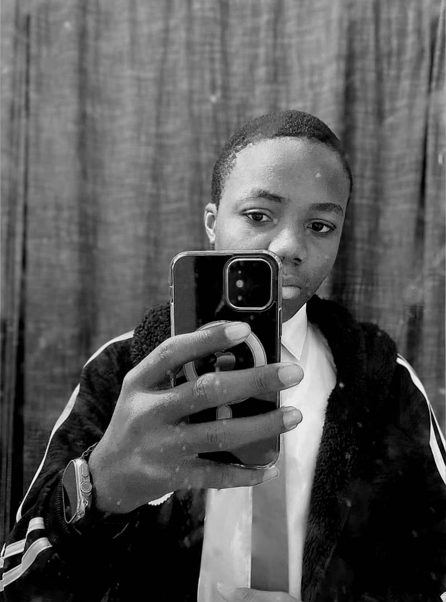
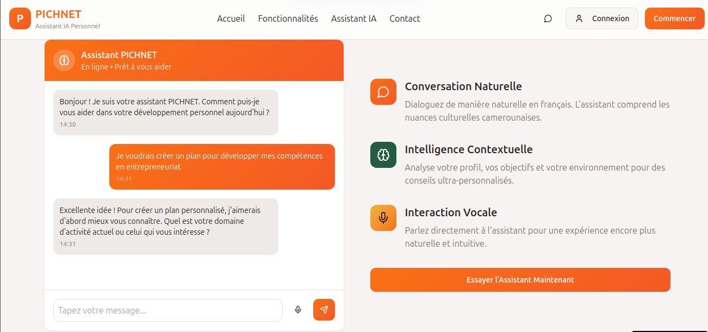
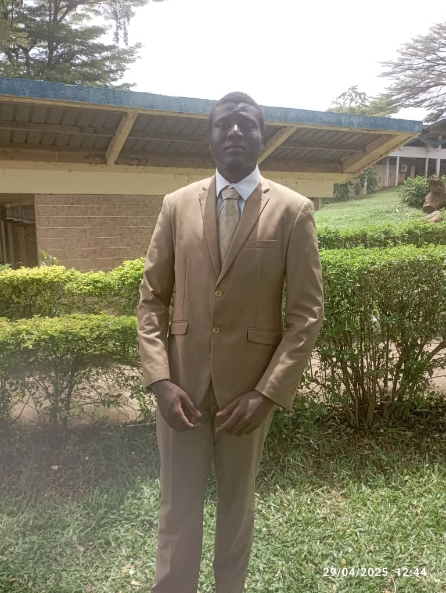
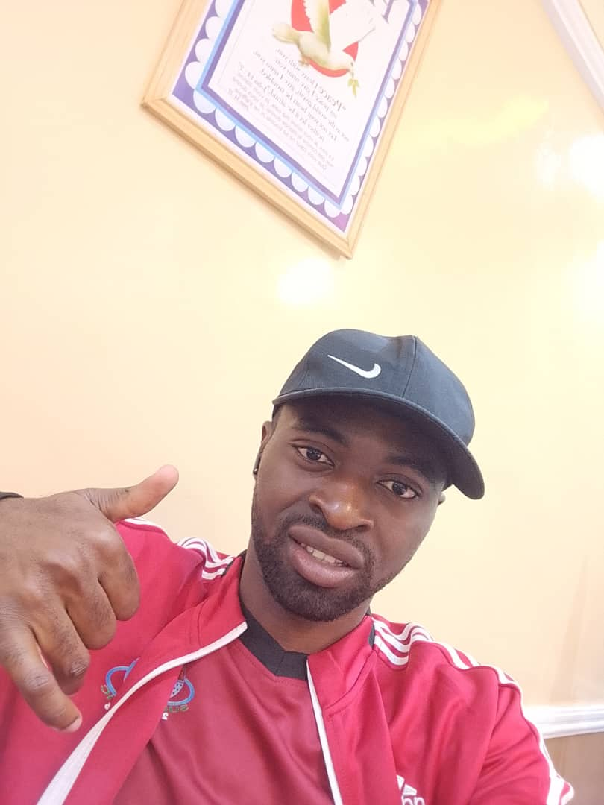

01
SYNTRA
Développeur full-stack ● Créateur de produits
Je suis Daniel Beni, développeur camerounais passionné par les interfaces utiles, les systèmes robustes et les projets qui ont un impact réel.

BUILDJe construis des produits numériques à la croisée du design, du code et de la stratégie.
Basé à Yaoundé, j'aime comprendre les problèmes complexes, les rendre simples et livrer des expériences qui fonctionnent vraiment. Du prototype au produit déployé, je travaille avec curiosité, exigence et une attention particulière aux détails.



Une sélection de projets réels et d'explorations construits avec intention.
Chaque projet est une invitation à apprendre, expérimenter et faire mieux que la veille.